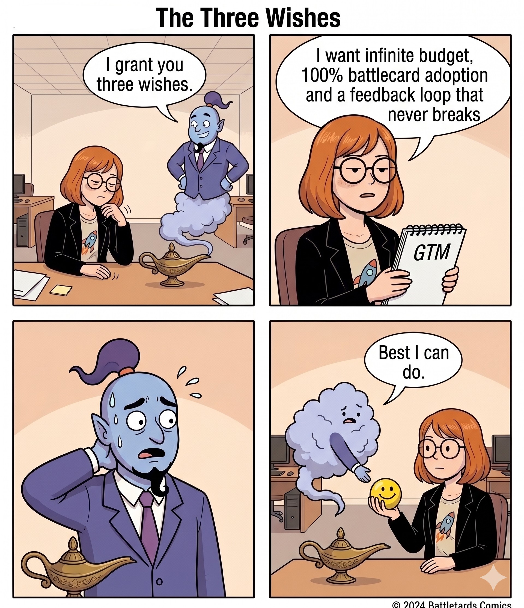
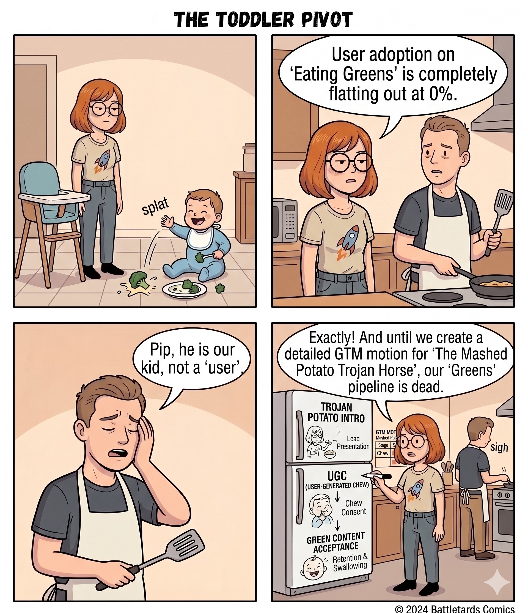

The AI-First Toolbelt
§ 06 / Building
Two side bets I'm shipping on the side.
Pre-launch
// Travel · Consumer
Detour Club.
A travel discovery app for people who plan trips by collecting links from blogs, Reddit threads, and YouTube videos and never look at them again. Currently building the curation engine, the database, and the backend.
trydetourclub.com →Live · Weekly
// Comic · LinkedIn
Circling Back.
A slice-of-life comic series about the absurd parts of product marketing like stakeholder politics, founder requests at 11pm, and the eternal "can you make this pop?" Author and lead storyteller.

